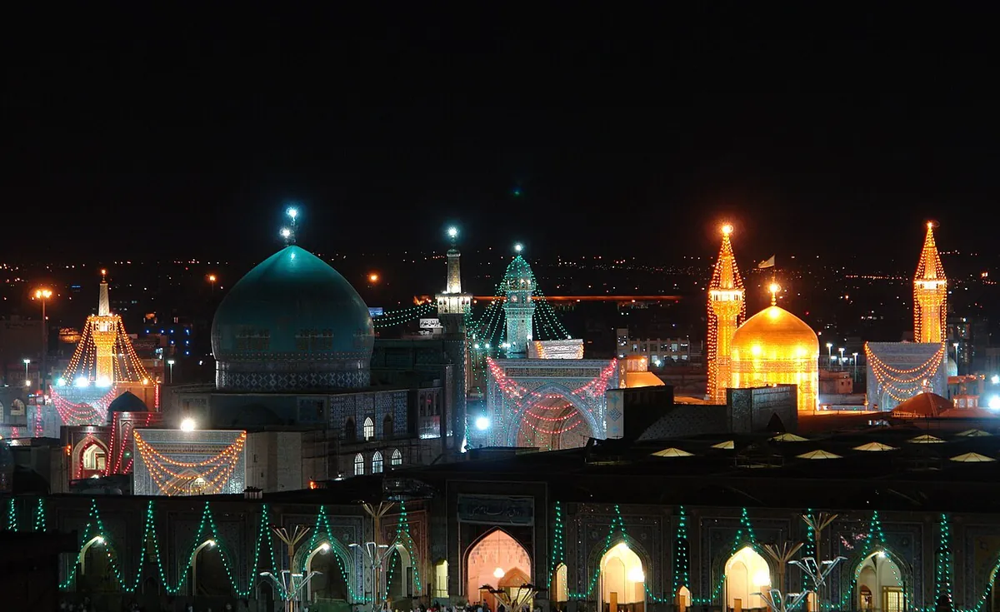

خدمات حسب احتياجك
خدمات السفر والتنسيق في مشهد:
رحلتك بتفاصيل أوضح
ماذا يمكن تنسيقه لرحلتك؟
تختلف احتياجات الزوار؛ لذلك أبدأ من موعد الوصول وعدد المسافرين وما يريد الزائر ترتيبه. يمكننا مراجعة خيارات الاستقبال والإقامة والتنقل والزيارة، ثم تأكيد ما يتوفر فعلاً من الجهة المعنية.

أرسل موعد الوصول وعدد المسافرين وما تحتاج إليه. سأراجع معك ما يمكن تنسيقه، وما يحتاج إلى تأكيد من الفندق أو مقدم الخدمة. لا يُعد الاستفسار حجزاً، وتُوضح التفاصيل والسعر كتابةً قبل أي التزام.
الاستقبال والتنقل
أخبرني بموعد وصولك وعدد المسافرين، لنراجع خيارات النقل ونؤكد السعر والموعد مع مقدم الخدمة.
دليل المطار ↙الإقامة قرب الحرم
نقارن الموقع ونوع الغرفة والسعر النهائي وشروط الإلغاء قبل أن تختار.
مقارنة الفنادق ↙جولة ركوب الخيل في الطبيعة
يمكن الاستفسار عن الموقع والمدرب وشروط العمر والسلامة والتوفر قبل الحجز.
تفاصيل الجولة ↙التنسيق الصحي
يمكنني المساعدة في الاستفسار الأولي عن المستشفى والتواصل غير الطبي؛ أما التشخيص والعلاج فمسؤولية الطبيب.
السياحة العلاجية ↙برنامج زيارة الحرم
راجع مداخل الحرم ومسار الوصول، واختر وقت الزيارة بما يناسب أسرتك.
دليل الزيارة ↙ميزانية الرحلة
احسب الميزانية باستخدام عروض الأسعار الحالية التي حصلت عليها.
دليل التكلفة ↙من العراق والخليج
معلومات عن السفر من بلدك ومتطلبات الدخول التي ينبغي التحقق منها قبل الحجز.
دليل الوصول ↙ماذا تشمل المساعدة عملياً؟
الهدف أن تصل إلى مشهد وأنت تعرف ما الذي يمكن تنسيقه مسبقاً وما الذي يُؤكد عند الوصول. نطاق الخدمة يُكتب بوضوح قبل أي دفع:
- الاستقبال وسائق عربي ومترجم: ترتيب الوصول من مطار مشهد إلى الفندق، أو توفير سائق عربي ومترجم ومرشد سياحي للجولات العائلية في المدن المائية المغلقة، ومصايف طرقبه وشانديز، ومنتزهات وكوهسنگي، وأسواق إيثار ووحيد وفردوسي. راجع أيضاً دليل المطار.
- الإقامة: المساعدة في فهم خيارات القرب من الحرم والمعايير العملية قبل الحجز: من فندق قصر مشهد والغرف الملكية والأجنحة الفاخرة وبرامج شهر العسل للأزواج، إلى الفنادق الاقتصادية الملائمة في السفر الفردي والشبابي والشقق المفروشة. قارن أيضاً عبر فنادق قرب الحرم.
- برنامج الزيارة والمطاعم ومنتجات قائنات: ترتيب أيام مرنة لـجولة صحون وأروقة حرم الإمام الرضا، وتنسيق جلسات الشيشليك ومعين درباري وبوظة دقت، أو تأمين زعفران قائنات وزرشك قائنات بالمفرق والجملة. انظر دليل الزيارة ونموذج 3 أيام.
- الفحص الميداني والتحقق قبل التعامل: للمغتربين والتجار والمستثمرين العرب في مشهد؛ يمكن الاستفسار عن فحص ميداني للعقار أو السيارة أو البضائع. يُحدد نطاق الفحص وطريقة التوثيق والمسؤولية كتابةً قبل أي التزام. وأي تحويل مالي يتم مباشرة عبر جهة مرخصة، وليس إلى حساب شخصي أو وسيط.
- التنسيق الصحي: عند الحاجة إلى مراجعة طبية أو استفسار عن مسارات شائعة مثل زراعة الشعر أو تجميل الأنف أو مراكز أطفال الأنابيب والإخصاب، المساعدة في التواصل اللوجستي والمترجم الميداني دون ادعاء نتائج علاجية. راجع السياحة العلاجية.
كيف نبدأ؟
أرسل عبر واتساب: تاريخ الوصول التقريبي، عدد المسافرين، بلد المغادرة، وما يهمك (إقامة، استقبال، زيارة، تسوق قائنات، فحص أملاك، أو تنسيق صحي). أردّ عليك بنطاق ما يمكن تنسيقه وما يحتاج تأكيداً، والسعر إن وُجد، قبل أي التزام. تعرّف عليّ في عن حسين واطلع على نماذج برامج الزيارة وسياسة آراء الزوار.
جدول نطاق التنسيق والتأكيد المسبق
| الخدمة للزائر العربي | التنسيق المباشر مع حسين | ما يُؤكد كتابياً قبل الاتفاق |
|---|---|---|
| الاستقبال من المطار والتنقل | الالتقاء في المطار أو المحطة والتوصيل داخل مشهد وإلى طرقبة وشانديز | السعر النهائي، نوع السيارة، وساعة الوصول الفعلية |
| الإقامة قرب الحرم | ترشيح خيارات مناسبة للعائلة وكبار السن حسب المسافة إلى بوابات الحرم | توفر الغرف، شروط الوجبات، السعر الكامل، وسياسة الإلغاء |
| توريد زعفران وزرشك قائنات | تنسيق توفير زعفران وزرشك قائنات بالمفرق والجملة، مع توضيح النوع والوزن والدفعة والتعبئة المتاحة | الدرجة (سوبر نغين/سركل/بوفكي)، الوزن الصافي، وسعر اليوم |
| التمثيل الأمين وفحص الأملاك | معاينة بصرية للعقار أو السيارة أو البضاعة وتوثيق ما يظهر، أو التنسيق مع صرافة مرخصة عند الحاجة | أجرة المهمة المتفق عليها، والفاتورة أو مستند الجهة المنفذة، وأي تقرير متخصص يصدر من جهة مختصة |
| التنسيق الصحي والمستشفيات | توضيح التخصصات، الترجمة الفارسية، وتنسيق المواصلات والإقامة | رأي الطبيب المختص، الموعد الرسمي، والتكلفة من المركز الطبي |
ما الذي لا أعد به؟
لا أعد بنتائج تأشيرة أو مواعيد طبية مضمونة أو أسعار فنادق ثابتة على الموقع، كما يقتصر التنسيق حصراً على السفر والسياحة والمرافقة المشروعة ولا نقدم خدمات وساطة زواج بأي شكل (طالع المرجع القانوني للزواج المؤقت والضوابط الرسمية في إيران للتوعية القانونية فقط). الشفافية أهم من ملء الصفحة بوعود، وكل تفصيلة مهمة تُؤكد كتابياً.
الخدمات ليست حجزاً مؤكداً بمجرد إرسال الطلب. يُوضح نطاق الخدمة والسعر والتوفر كتابةً قبل أي اتفاق أو دفع.
عن الأسعار في هذا الدليل
الأرقام المذكورة بالدولار الأمريكي، وهي نطاقات استرشادية جمعناها من مواقع حجز وسفر منشورة علناً. ولأن الأسعار تتغير بشدة بحسب الموسم وسعر الصرف وتوفر الغرف والمقاعد، نؤكد لك السعر الحالي عند التواصل بحسب تاريخ سفرك وعدد المسافرين، ونوضح ما يشمله وما لا يشمله قبل أي التزام.
ننصحك بالمقارنة: اطلب عروضاً من أي مقدّم خدمة آخر في مشهد، ثم قارنها بعرضنا من حيث السعر النهائي ووضوح التفاصيل وجودة الخدمة. نثق أنك ستجد عندنا خدمة أكثر إنصافاً وجودة، ونرحب بأن تحكم بنفسك. واطلب دائماً تأكيد السعر والتفاصيل كتابةً قبل الدفع.
مصادر رسمية ومراجع للتحقق
تحقق من المعلومات المتغيرة مباشرة من الجهات المختصة أو مقدم الخدمة قبل السفر أو الحجز؛ فقد تتغير المتطلبات والخدمات والأسعار.
الأسئلة الشائعة
ما الخدمات التي يمكن الاستفسار عنها عبر حسين؟
يمكن الاستفسار عن تنسيق الزيارة، الاستقبال من المطار أو المحطة، التوصيل داخل مشهد، المساعدة في البحث عن الفنادق أو الشقق، والترجمة والتنسيق الأولي للسياحة العلاجية.
هل الحجز يتم بمجرد إرسال رسالة واتساب؟
لا؛ إرسال الرسالة بداية استفسار فقط ولا يعني تأكيد الحجز. يُوضح نطاق الخدمة والتوفر والتكلفة وشروط الإلغاء كتابةً قبل أي اتفاق أو دفع.
هل تقدم الخدمة للزوار من العراق والخليج ولبنان؟
نعم، الخدمات موجهة للزائر العربي عموماً من العراق والخليج ولبنان وسائر الدول العربية مع مراعاة احتياجات العائلات وكبار السن.
هل تشمل الخدمات السياحة العلاجية؟
نعم، تشمل المساعدة في الترجمة والتنسيق اللوجستي والإقامة والتنقل عند السفر للعلاج في مشهد، دون ادعاء نتائج طبية أو ضمان مواعيد علاجية.
كيف أطلب تنسيقاً يناسب رحلتي؟
أرسل موعد السفر التقريبي وعدد المسافرين ومدينة الوصول واحتياجاتك الأساسية عبر واتساب لتحديد الخيارات المناسبة والتحقق من توفرها.